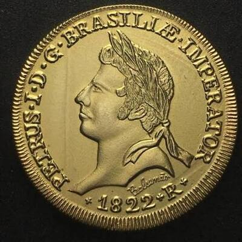
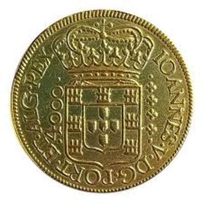
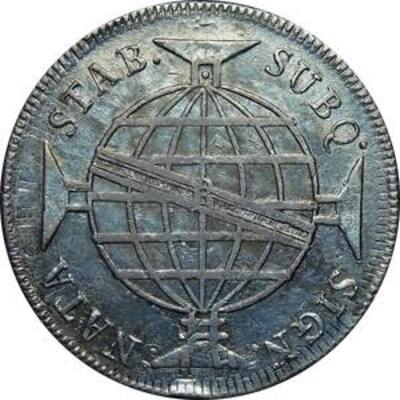
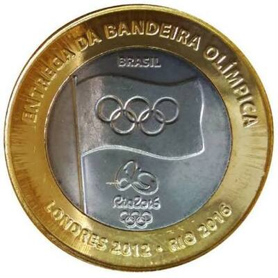

1822Peça de Coroação
Considerada a moeda mais valiosa e rara do Brasil. Foram cunhadas apenas poucas unidades para a coroação de D. Pedro I.
Conheça marcos históricos, moedas comemorativas e peças de ouro lendárias que contam a história do Brasil através do dinheiro.

1822Considerada a moeda mais valiosa e rara do Brasil. Foram cunhadas apenas poucas unidades para a coroação de D. Pedro I.

1732Magnífica moeda de ouro do período colonial brasileiro sob o reinado de D. João V, ostentando o imponente brasão real.

1818Famosa moeda carimbada e cunhada sobre patacones espanhóis, circulando amplamente no período do Reino Unido a Portugal e Algarves.

2012Raríssima moeda bicolor comemorativa lançada para marcar a passagem dos Jogos Olímpicos de Londres 2012 para o Rio 2016.